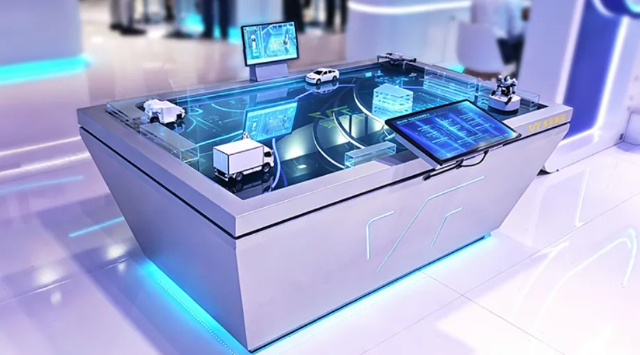
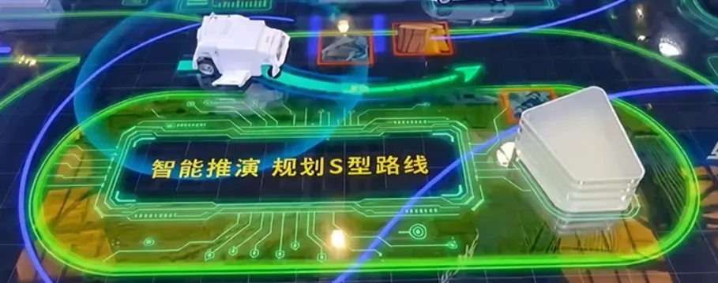
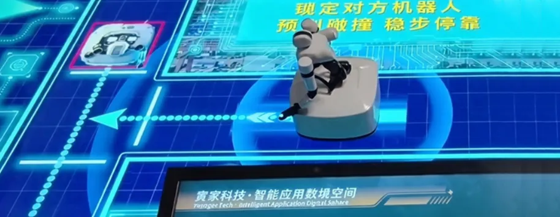
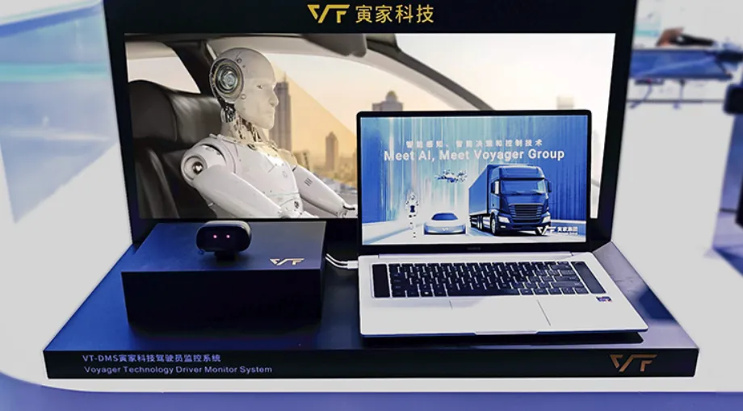
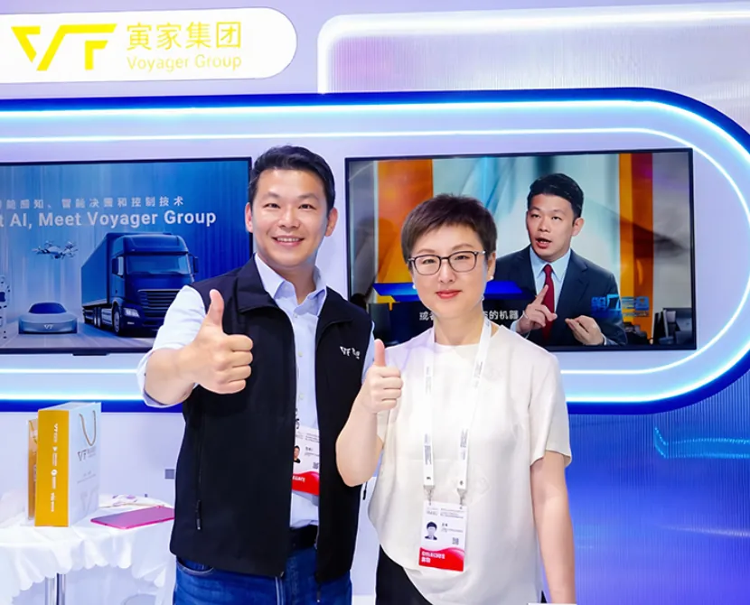

世界人工智能合作組織在上海應運而生
在"智能夥伴共創未來"主題下
本屆大會"三地四館"聯動
展覽總面積突破10萬平方米
各行各業共襄盛舉，探討人工智能
如何向上向善、造福人類、共同發展
寅家集團帶來三大看點，全新話題
寅家集團的WAIC時刻，已來!
新議題、新展品、新場景
亮出“眼·腦·身”物理AI量產解決方案
覆蓋“感知·決策·控制”全鏈路
屬於寅家集團的“AI大片”正在上演......
新議題：物理AI
數字AI如何規模化走向真實物理世界?
車載智能對於其他智能通用體有何借鑑意義?
AI落地物理空間，核心依託“眼腦身”完整閉環
基於這一邏輯
寅家集團正式推出
“眼·腦·身”一體化物理AI量產方案:
眼=智能感知
腦=智能決策
身=執行控制
依託成熟的車載智能感知(VT-Sensing、VT-Navi)智能決策和控制技術(VT-Vulcan)
寅家集團已經斬獲近400萬車載訂單儲備
依託於國內多處研發和生產基地
寅家打造的車載AI智能解決方案
做到了車規級、能落地、可量產!
AI並非一紙藍圖，正在落實於您的每一次駕乘旅途

新展品：多個首發!
01
寅家智能應用數境空間
將車載智能、無人機、農業機器人和作業機器人聚集於數字沙盤
濃縮展示了集團的宏偉佈局生動演繹了車載技術在智慧農業、工業領域的具體應用

夜間高速，檢測到胎壓異常
AI算法如何輔助判決並控制車輛緊急停靠?

林間割草，地形複雜
如何利用“視算一體”規劃路線自主作業?

工業園區，兩臺機器人相遇十字路口
如何通過算法博弈，禮讓通行?

02
AI智能感知攝像頭
夜間畫質差、細節不清?
寅家集團的AI智能感知解決方案
比普通攝像頭多了一枚小小的芯片


基於成熟的高清視覺硬件體系專注環境識別與安全感知
可結合AI技術輔助解決攝像頭各類複雜光照成像難題
適配智能汽車、低空巡檢、智能機器人等
場景視覺採集
期待AI智能感知方案的大展身手
03
VT-CMS電子外後視鏡系統
此次亮相的CMS解決方案
基於高清成像與圖像矯正方案
可通過AI圖像優化算法，改善複雜工況視野問題
在車載經驗之上
小型化成像模組可直接適配無人機、具身機器人等
機載監測設備
實現高清畫面採集與實時回傳
（VT-CMS產品技術解決方案已通過國標GB15084-2022《機動車輛間接視野裝置性能和安裝要求》測試檢驗以及歐盟ECE R46認證。）

04
VT-DMS駕駛員監控系統
依託精準人體特徵捕捉技術對其警覺性進行評估分級
實時檢測人體面部狀態、視線角度、肢體特徵等狀態
並在需要時通過人機界面提供視覺和聲音警告底層人體感知算法可拓展應用於無人機以及工業、服務機器人人機交互、智能跟隨等場景
（VT-DMS技術方案符合歐盟(EU)2019/2144（GSR 2.0）中關於DDAW/ADDW/Cybersecurity的相關認證規定。）

新場景：不止車載智能
乘用車/商用車車載智能
落地智能感知、規控技術方案
助力減少行車視野盲區、預警駕駛風險，提升行駛安全
低空巡檢無人機機載感知
複用輕量化視覺成像與定位技術實現高空高清畫面採集、環境自主識別助力降低低空設備研發驗證成本
工業、服務具身機器人
遷移人體識別、控制調度底層能力支持人機跟隨、障礙物規避、協同作業
農業機器人智慧作業
複用環境感知與實時控制技術助力農業機器人田間環境監測、自主作業

大會開幕日，貴賓雲集。國務院臺辦潘賢掌副主任一行來到寅家展臺駐足參觀，現場深度體驗集團呈現的“眼·腦·身”一體化物理AI全鏈路量產解決方案，細緻瞭解車載感知、跨場景智能裝備等前沿產品技術，圍繞物理AI產業化落地、多場景技術複用等行業議題展開深入交流探討。
同日，上海市臺辦主任金梅帶隊走訪寅家展臺，與寅家集團創始人兼CEO陳寅仁先生展開親切溝通。雙方圍繞AI技術創新、車規級技術的商業化落地等核心話題充分交換意見，深度探討人工智能賦能實體產業的發展路徑，現場交流氛圍融洽熱烈。

立足國家“人工智能+”發展佈局，本屆WAIC 為全球 AI 創新與治理指明開放共贏、安全可控的發展方向。寅家集團積極響應國家戰略和時代趨勢，在此次展會重磅推出“眼·腦·身”一體化物理AI量產方案，打通感知、決策、控制全鏈路，助力成熟車規級技術向低空、工業、農業多場景遷移落地，推動人工智能向上向善、造福人類、共同發展。